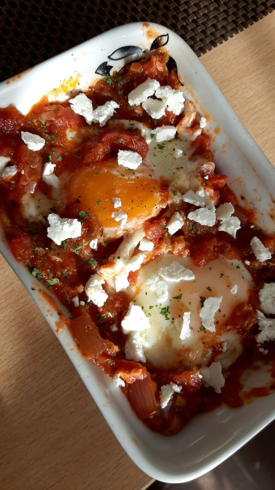
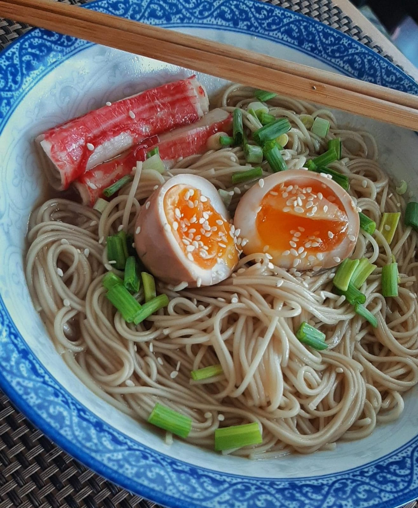
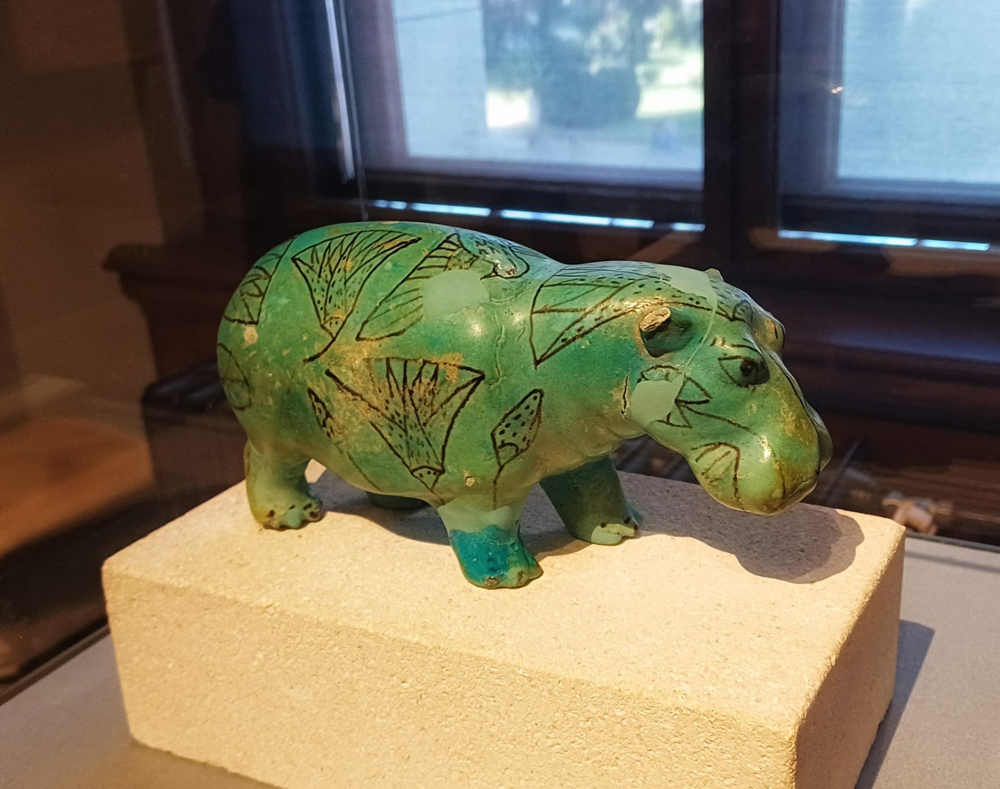

Travel blog #2
By ITania, Posted on 03/09/2024
Budapest
This is a beautiful view of the Hungarian Parliament building at night, over the Danube.
I took this picture on my latest trip!
Culinary blog #2
By ITania, Posted on 03/06/2024

My favourite recipe
Shakshuka is the tastiest breakfast recipe I know. To make it, we need:
- Tomatoes
- Olive oil
- Red pepper
- Onion
- Garlic
- Salt, pepper and parsley
- Eggs
- Fresh cheese/Feta
Culinary blog #1
By ITania, Posted on 03/01/2024

My famous ramen recipe
Here is a recipe I enjoy because its delicious and very easy to make! You only need a couple ingredients:
- Soba noodles
- Scallions
- Sesame seeds
- Soy sauce
- Surimi
- Any broth
- Ramen egg
A rare event
By ITania, Posted on 02/29/2024
29th of February only happens once every 4 years.
Travel blog #1
By ITania, Posted on 02/16/2024

An ancient egiptian statuette of a hippopotamus
He is cute.